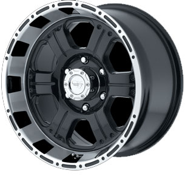

Procomp sets the standard for performance, durability and style with a full offering of alloy wheels for light trucks, 4x4, and SUV's. Their inexpensive price and tough build make them ideal for off-road vehicles!
For more info go to www.procompwheels.com